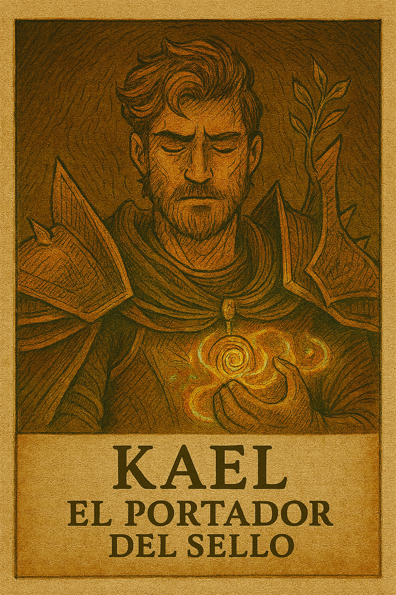

Personajes
Thalor, el Guardián de Hielo

Defensor implacable del Reino del Norte, Thalor canaliza el poder de los glaciares para resistir embates enemigos y dominar el combate cuerpo a cuerpo.
- Resistencia física: 95
- Daño cuerpo a cuerpo: 80
- Defensa contra fuego: +40%
Lunara, la Tejedora de Espíritus

Desde las Selvas del Sur, Lunara invoca espíritus ancestrales para proteger y sanar a su equipo, dominando el arte del apoyo mágico.
- Curación en área: +120 HP
- Buff de velocidad: +25%
- Resistencia física: 35
Kael, el Portador del Sello
Elegido por Gaia, Kael desata poderes latentes que se intensifican en momentos críticos, convirtiéndose en un catalizador de victoria en Zona de Conquista.
- Fuerza física: +25%
- Velocidad de movimiento: +15%
- Regeneración de salud: +10 HP/s
Personaje destacado
Cuando se activa el Sello de Gaia, Kael accede a una versión potenciada de sus habilidades:
- Fuerza física: +40%
- Velocidad de movimiento: +25%
- Regeneración de salud: +18 HP/s